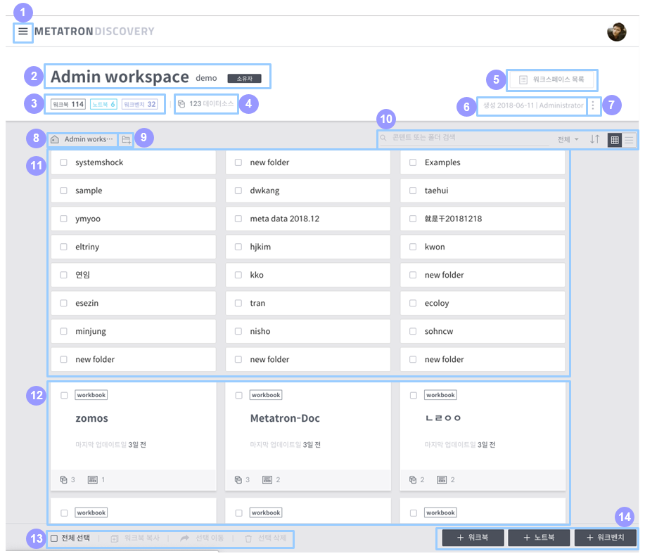

워크스페이스 홈¶
워크스페이스 홈 화면에서는 Metatron Discovery의 분석 모듈(워크북, 노트북, 워크벤치)의 관리 기능을 수행할 수 있습니다.
워크스페이스 홈 화면 구성¶
아래는 워크스페이스 홈 화면의 전반적인 구성을 설명한 것입니다.

메인 메뉴 버튼: 해당 버튼을 클릭하면 다른 워크스페이스로 접근할 수 있는 패널이 열립니다.
워크스페이스 정보: 해당 워크스페이스의 이름과 설명을 보여줍니다. 로그인한 사용자가 소유하는 워크스페이스일 경우, 워크스페이스 이름 옆에 '소유자'라는 아이콘이 보입니다.
등록 개체 현황: 워크스페이스 내에 등록된 개체 타입별 개수를 보여줍니다.
데이터 소스: 해당 워크스페이스에서 사용 중인 데이터 소스의 개수를 보여주며, 이 영역을 클릭하면 사용 중인 데이터 소스들의 목록이 나타납니다.
워크스페이스 목록: 이 버튼을 클릭하면 공유 워크스페이스의 목록이 나타납니다. (자세한 내용은 공유 워크스페이스 목록 참조)
생성 정보: 해당 워크스페이스의 생성일과 만든 사용자 이름을 보여줍니다.
더 보기: 해당 워크스페이스의 정보를 수정합니다.
이름 및 설명 수정: 해당 워크스페이스의 이름과 설명을 수정합니다.
공유 회원 및 그룹 설정: 해당 워크스페이스에 접근할 수 있는 사용자와 그룹을 지정합니다. (자세한 사항은 공유 워크스페이스 접근 권한 설정 참조)
노트북 서버 설정: 노트북 모듈이 사용하는 외부 분석 도구 서버 접근 정보를 설정합니다.
권한 스키마 설정: 해당 워크스페이스에서의 사용자 역할별 접근 권한을 설정합니다. (자세한 사항은 공유 워크스페이스 접근 권한 설정 참조)
소유자 변경: 해당 워크스페이스의 소유자를 바꿉니다.
워크스페이스 삭제: 해당 워크스페이스를 삭제합니다.
워크스페이스 경로: 워크스페이스 내에서의 현재 위치를 확인합니다. 경로에 나열된 상위 폴더 중 하나를 클릭하면 해당 폴더로 이동합니다.
폴더 생성: 클릭하면 현재 위치에 새 폴더를 생성합니다.
개체 목록 선별/정렬:
검색: 해당 워크스페이스 내에서 개체 또는 폴더를 이름으로 검색합니다.
개체 타입: 워크북, 노트북, 워크벤치 중 원하는 개체 타입만을 선별해서 조회합니다.
정렬 순서: 폴더 및 개체를 이름 또는 업데이트 시간 순서로 정렬합니다.
뷰 형식: 워크스페이스 내 개체들의 열거 방식을 카드뷰와 리스트뷰 중에서 선택합니다.
폴더 목록: 현재 위치에서 검색 조건에 부합하는 폴더들을 보여줍니다. 이중 하나를 클릭하면 해당 폴더 안으로 이동합니다. (개별 폴더 항목에 대한 자세한 설명은 폴더 항목 참조)
개체 목록: 현재 위치에서 검색 또는 선별 조건에 부합하는 개체들을 보여줍니다. 이 중 하나를 클릭하면 해당 개체의 홈 화면으로 이동합니다. (개별 개체 항목에 대한 자세한 설명은 개체 항목 참조)
개체 선택/복사/이동/삭제: 개체 전체 선택, 복사, 이동, 삭제를 합니다. (자세한 내용은 폴더 및 개체 선택/복사/이동/삭제 참조)
개체 생성: 해당 워크스페이스에서 원하는 타입의 개체를 만드는 데 사용되는 버튼들입니다. (구체적인 절차는 각각 워크북 만들기, 신규 노트북 생성하기, 워크벤치 만들기 참조)
폴더 항목¶
각 폴더에 마우스를 올렸을 때 다음과 같이 항목들이 표시됩니다.

확인란: 해당 폴더를 선택할 때 사용합니다. 선택한 폴더는 복제, 이동, 삭제할 수 있습니다.
이름: 해당 폴더의 이름입니다.
수정: 클릭하면 폴더의 이름을 수정할 수 있습니다. 이 버튼은 해당 폴더 항목에 마우스를 오버할 때만 나타납니다.
삭제: 클릭하면 해당 폴더가 삭제됩니다. 이 버튼은 해당 폴더 항목에 마우스를 오버할 때만 나타납니다.
개체 항목¶
각 개체에 마우스를 올렸을 때 다음과 같이 항목들이 표시됩니다.

확인란: 해당 개체를 선택할 때 사용됩니다. 선택한 개체는 복제, 이동, 삭제할 수 있습니다.
개체 타입: 해당 개체가 워크북/노트북/워크벤치 중에서 어느 타입인지 보여줍니다.
삭제: 클릭하면 해당 개체가 삭제됩니다. 이 버튼은 해당 개체 항목에 마우스를 오버할 때만 나타납니다.
이름: 해당 개체의 이름입니다.
업데이트 시점: 해당 개체가 마지막으로 업데이트된 시점을 보여줍니다.
데이터 소스/대시보드 개수: 이 영역은 워크북 개체에만 고유합니다.
좌측 아이콘 옆 숫자는 해당 워크북에 연동된 데이터 소스의 개수를 가리킵니다.
우측 아이콘 옆 숫자는 해당 워크북에 등록된 대시보드의 개수를 가리킵니다.
폴더 및 개체 선택/복사/이동/삭제¶
워크스페이스 내 폴더와 개체는 복사/이동/삭제가 가능합니다. 복사/이동/삭제를 원하는 폴더 또는 개체를 선택하면 워크스페이스 홈 화면 좌측 하단의 동작 버튼들이 활성화됩니다.

전체 선택: 현재 폴더 목록과 개체 목록에 나타난 모든 항목을 선택합니다.
워크북 복사: 워크북에만 유효한 기능입니다. 이 버튼을 클릭하면 선택한 워크북이 복제됩니다.
선택 이동: 선택한 폴더 및 개체를 이동합니다. 워크북의 경우에는 다른 워크스페이스로 이동이 가능하고, 그 외의 항목들은 동일 워크스페이스 내 다른 폴더로 이동이 가능합니다. 워크북이 다른 개체와 함께 선택되어 있을 때는 이동을 실행할 수 없습니다.
선택 삭제: 선택한 폴더 및 개체를 삭제합니다.